x <- 1:10
y <- x^2
plot(x, y,
pch = 13,
cex = 2,
main= "Expression"
)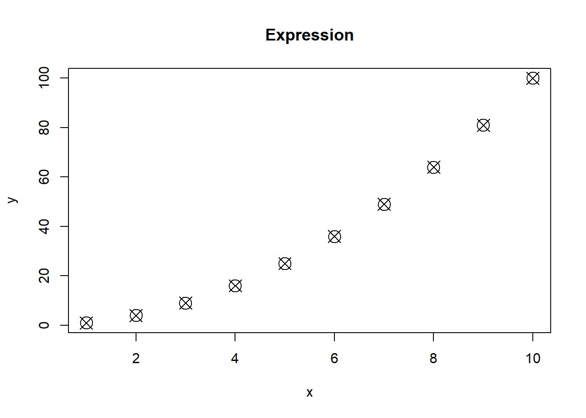
One of the best benefits of using R is its capabilities in data visualization. Graphs are immensely important, and R gives you complete control over how they are displayed. Not only that, but you have the option for more complex visualizations, which will be explored in Chapter 8 .
Although it may seem daunting, it is incredibly easy to create graphs in R. Once you have the structure of the base code, you can easily adapt it to whichever you need. The structure is as follows:
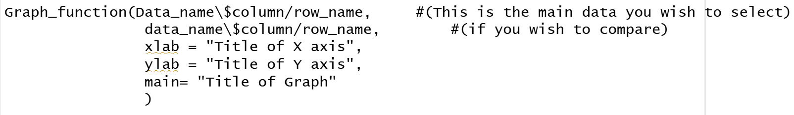
One of the most important things that R allows you to do is customization of your graphs, such as changing colour/size/style of plots,lines and bars etc. Some of these may be specific to the type of graph you’re using, in which case the customization options will be included in the corresponding sections below. But to give you the general options:
Colour can be a very effective tool for your graph creation, differentiating data sets, make graphs more accessible or highlighting sections.
There are several ways to change the colour, but they mostly follow a singular additional line of code:
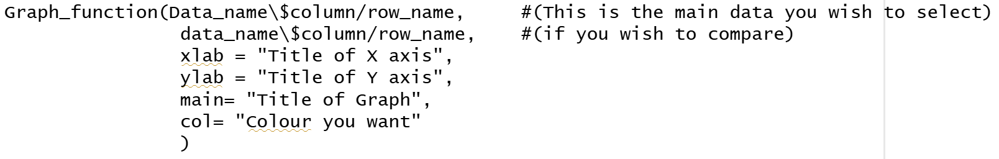
R can insert any colour you’d like, you can do this by simply naming the colour or you can follow the hex code:
col= “red” or col=“#A80000”
A named colour chart can be found under Appendix 1 or you can use a Hex code colour palette similar to this:
Selected colour: #1f77b4
When you have multiple plots on a graph, you may want to use different colours for each set of data, this is where vectors come in handy again.
One way would be to list the colours you want in corresponding order to the data:
col= c(“red”,“blue”,“green”,“yellow”)
Or you could create a range:
col= c(1:4)
Another method of customisation comes from size and shape of points on the graph. For example when you create a scatterplot you may want certain points as large squares and others as small circles. The two lines of code that can be added similarly to colour are:
pch= (Plotting character, this controls shape)
cex= (Character expression, this controls size)
x <- 1:10
y <- x^2
plot(x, y,
pch = 13,
cex = 2,
main= "Expression"
)
Common plotting symbols could include:
| pch | Shape |
|---|---|
| 1 | Open circle |
| 2 | Triangle |
| 15 | Filled square |
| 16 | Filled circle |
| 17 | Filled triangle |
| 18 | Diamond |
For most scientific figure, pch = 16 (filled circles) are perfect as they remain visible when printed.
You can find more examples in Appendix 2
When creating line graphs, or plots that have a line of best fit, being able to change the appearance of the lines makes data easier to interpret. There are three main modifiers for lines:
type= how the line is presented This controls what is drawn on the graph, whether its just a line, points or even both. This is used when the ‘plot()’ function is present:
plot(x, y,
type = "o",
main= "Line Type",
)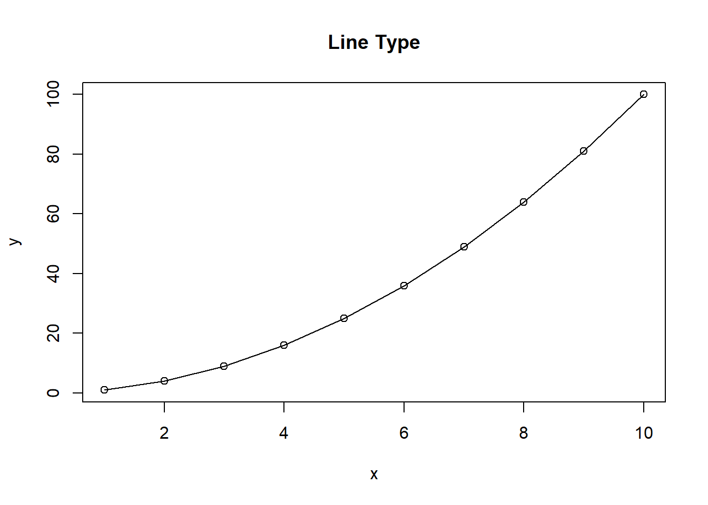
Possibilities of line types are:
| type | Description | Appearance |
|---|---|---|
"p" |
Points only (default) | ● ● ● |
"l" |
Lines only | ───── |
"b" |
Both points and lines | ●──●──● |
"o" |
Overplotted points and lines | ●━━●━━● |
"h" |
Histogram-like vertical lines | │ │ │ │ |
"n" |
No plotting (axes only) | Axes only |
lty = line type This will control how the lines are drawn, for example they can be dashed, solid, dotted etc. This will be used whenever a line is drawn:
plot(x, y,
type = "l",
lty = 2,
main= "Line appearance")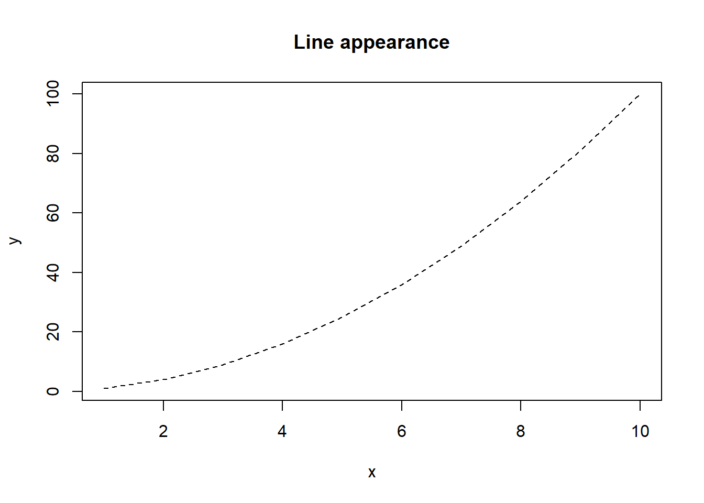
| lty | Appearance | Description |
|---|---|---|
| 1 | ───────── | Solid (default) |
| 2 | - - - - - | Dashed |
| 3 | ········· | Dotted |
| 4 | - · - · - | Dot-dash |
lwd= Line width This will control the thickness of any line drawn:
plot(x, y,
type = "l",
lwd = 3,
main = "Line Thickness")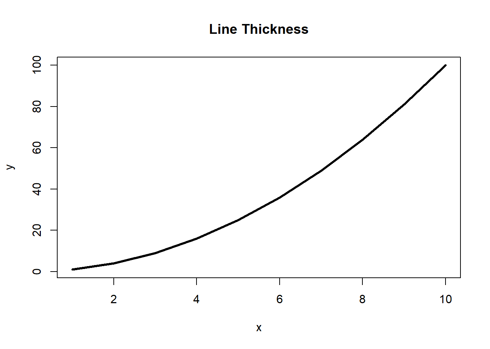
| lwd | Appearance |
|---|---|
| 1 | Thin (default) |
| 2 | Medium |
| 3 | Thick |
| 4+ | Very thick |
A legend is incredibly useful, and a graph is not complete without one. This will describe what your points actually represent. The following code for a legend will go after you have plotted your graph:
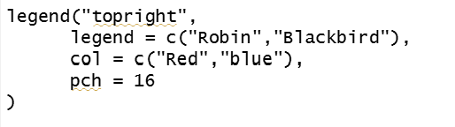
Sometimes you may want to add these to provide additional information that cannot be communicated by data alone. This may be useful to help highlight important observations, identify trands or patterns.
Once you have an existing graph you can add text anywhere youd like using the text() function which follows a basic syntax of:
text(x position,y position, labels) -> where labels is the text that will be added.
For example:
A <- c(1,2,3,4,5)
B <- c(6,7,8,9,10)
plot(A, B)
text(1.3,6.3, "SMALLEST")
text(4.6,10, "LARGEST")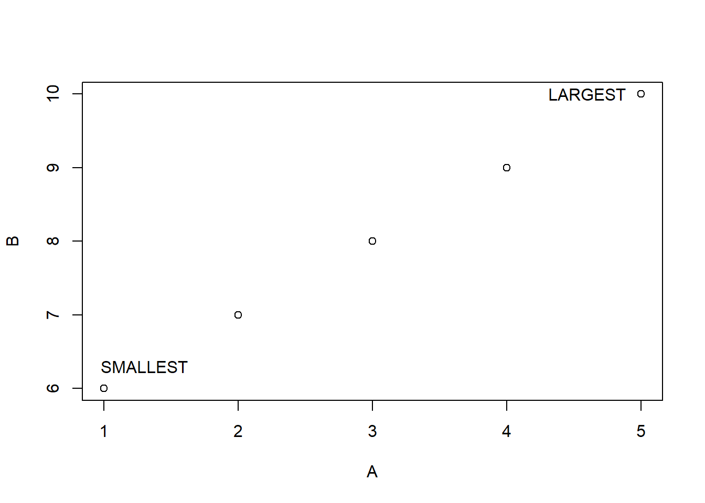
You can also label individual points and instead of coding each point you can use a vector and another modifier named:
pos= Position of Label
| pos | Position |
|---|---|
1 |
Below |
2 |
Left |
3 |
Above |
4 |
Right |
plot(A,B)
text(A,B,
labels = LETTERS[1:5],
pos = 4
)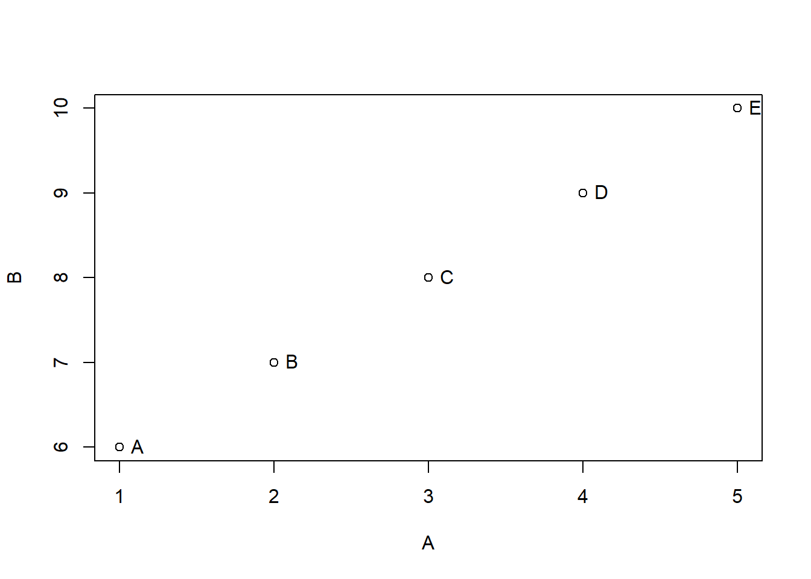
Similar to other plotting functions, text() has several modifiers for style:
col= Colour
cex= Text size
font= Front style
Any function that imposes text onto your graph can be edited using this, so legends, titles and labels!
| font | Style | Example |
|---|---|---|
1 |
Plain (default) | Normal text |
2 |
Bold | Bold text |
3 |
Italic | Italic text |
4 |
Bold Italic | Bold italic text |
srt= Text rotation
You don’t have to have all of them, but an example would be:
plot(A,B)
text(A,B,
labels = LETTERS[1:5],
pos = 4,
col = c(2:6),
cex = 1.3,
font = 4,
srt= 10
)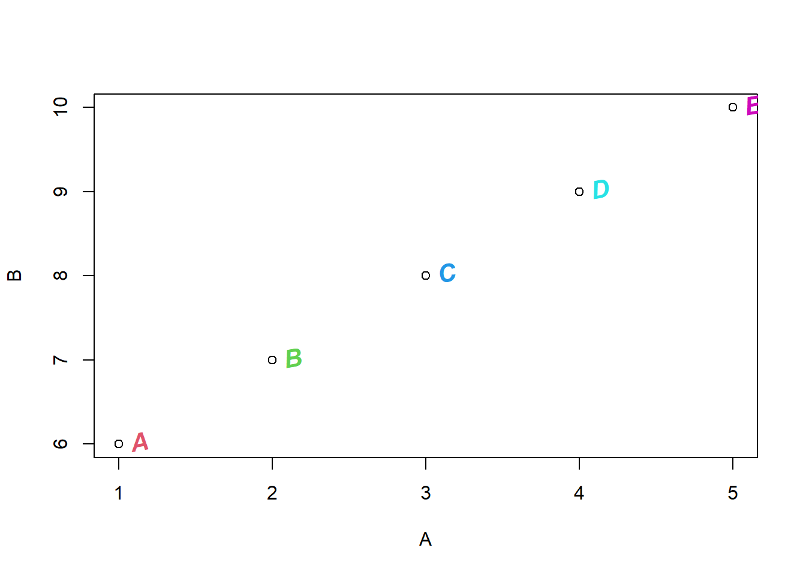
Limits and intervals
For the examples below we will use the following data frame of a bird survey:
| Day | Species | Habitat | Count | Weight_g | Wingspan_cm |
|---|---|---|---|---|---|
| 1 | Robin | Woodland | 18 | 74 | 34 |
| 1 | Blue Tit | Woodland | 25 | 10.2 | 18 |
| 1 | Blackbird | Garden | 20 | 97 | 38 |
| 2 | Robin | Woodland | 20 | 79 | 35 |
| 2 | Blue Tit | Woodland | 27 | 12.5 | 18 |
| 2 | Blackbird | Garden | 22 | 106 | 39 |
| 3 | Robin | Woodland | 28 | 76 | 35 |
| 3 | Blue Tit | Woodland | 35 | 11.1 | 19 |
| 3 | Blackbird | Garden | 26 | 102 | 39 |
| 4 | Robin | Woodland | 35 | 84 | 36 |
| 4 | Blue Tit | Woodland | 42 | 13.2 | 19 |
| 4 | Blackbird | Garden | 30 | 111 | 40 |
| 5 | Robin | Woodland | 40 | 81 | 36 |
| 5 | Blue Tit | Woodland | 48 | 10.8 | 20 |
| 5 | Blackbird | Garden | 34 | 108 | 40 |
| 6 | Robin | Woodland | 38 | 87 | 36 |
| 6 | Blue Tit | Woodland | 46 | 12.9 | 20 |
| 6 | Blackbird | Garden | 32 | 115 | 41 |
| 7 | Robin | Woodland | 36 | 78 | 36 |
| 7 | Blue Tit | Woodland | 44 | 9.8 | 20 |
| 7 | Blackbird | Garden | 30 | 104 | 40 |
| 8 | Robin | Woodland | 34 | 83 | 35 |
| 8 | Blue Tit | Woodland | 42 | 13.7 | 19 |
| 8 | Blackbird | Garden | 29 | 112 | 40 |
| 9 | Robin | Woodland | 30 | 75 | 35 |
| 9 | Blue Tit | Woodland | 38 | 11.6 | 19 |
| 9 | Blackbird | Garden | 27 | 99 | 39 |
| 10 | Robin | Woodland | 26 | 86 | 35 |
| 10 | Blue Tit | Woodland | 34 | 12.2 | 18 |
| 10 | Blackbird | Garden | 24 | 113 | 39 |
| 11 | Robin | Woodland | 22 | 80 | 34 |
| 11 | Blue Tit | Woodland | 30 | 10.5 | 18 |
| 11 | Blackbird | Garden | 22 | 105 | 38 |
| 12 | Robin | Woodland | 19 | 77 | 34 |
| 12 | Blue Tit | Woodland | 27 | 13.1 | 18 |
| 12 | Blackbird | Garden | 20 | 109 | 38 |
birds <- read.csv("dataBIRD.csv")Below are the instructions for some basic plots you may need, select the one you wish to learn to view.
A line graph displays continuous data collected in a specific order, such as over time. Consecutive observations are connected by a line to highlight trends and changes.
In this example we have 3 separate species counted per sampling day and we would ideally like to show each individual species on the graph as separate lines. This first plot is Robins; however, we can’t just use the basic syntax of ‘birds𝑐𝑜𝑢𝑛𝑡𝑠,𝑏𝑖𝑟𝑑𝑠day’ because it will return 3 values per day connected by one line, with non them.
So we need to tell R which data belongs to each line we’d like. Which is where we use the ‘==’ operator to tell it we only want the data for ‘robins’.
plot(
birds$Day[birds$Species == "Robin"],
birds$Count[birds$Species == "Robin"],
type = "o",
pch = 16,
col = "red",
lwd = 2,
ylim = c(0, 55),
xlab = "Day",
ylab = "Bird Count",
main = "Bird Counts Over Time"
)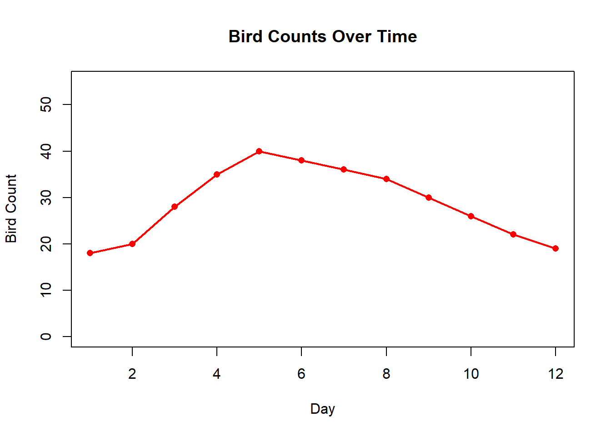
We can then add the rest of the species:
#this is the robin plot
plot(
birds$Day[birds$Species == "Robin"],
birds$Count[birds$Species == "Robin"],
type = "o",
pch = 16,
col = "red",
lwd = 2,
ylim = c(0, 55),
xlab = "Day",
ylab = "Bird Count",
main = "Bird Counts Over Time"
)
#this is the plots for the other birds
lines(
birds$Day[birds$Species == "Blue Tit"],
birds$Count[birds$Species == "Blue Tit"],
type = "o",
pch = 16,
col = "blue",
lwd = 2
)
lines(
birds$Day[birds$Species == "Blackbird"],
birds$Count[birds$Species == "Blackbird"],
type = "o",
pch = 16,
col = "darkgreen",
lwd = 2
)
legend("bottomright",
legend = c("Robin","Blue Tit", "Blackbird"),
col = c("red","blue","darkgreen"),
pch = 16,
lwd = 1
)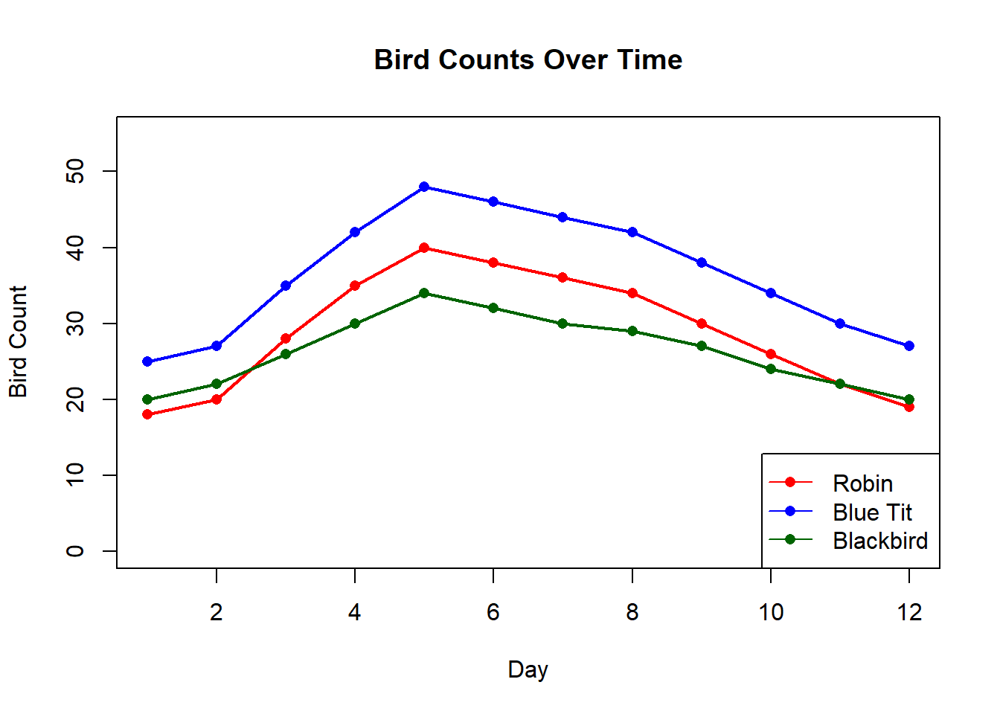
A bar chart is used to compare values of different categories. Each bar will represent a category, and the height of the bars will show count/frequency or means. Unlike a Histogram, the bars are separated because the categories will be independent of one another.
barplot(
birds$Count,
col = c("red", "blue", "darkgreen"),
ylim = c(0, 60),
xlab = "Day",
ylab = "Bird Count",
main = "Bird Count for Every Observation"
)
legend("topright",
legend = c("Robin", "Blue tit", "Black bird"),
col= c("red","blue","darkgreen"),
pch = 16
)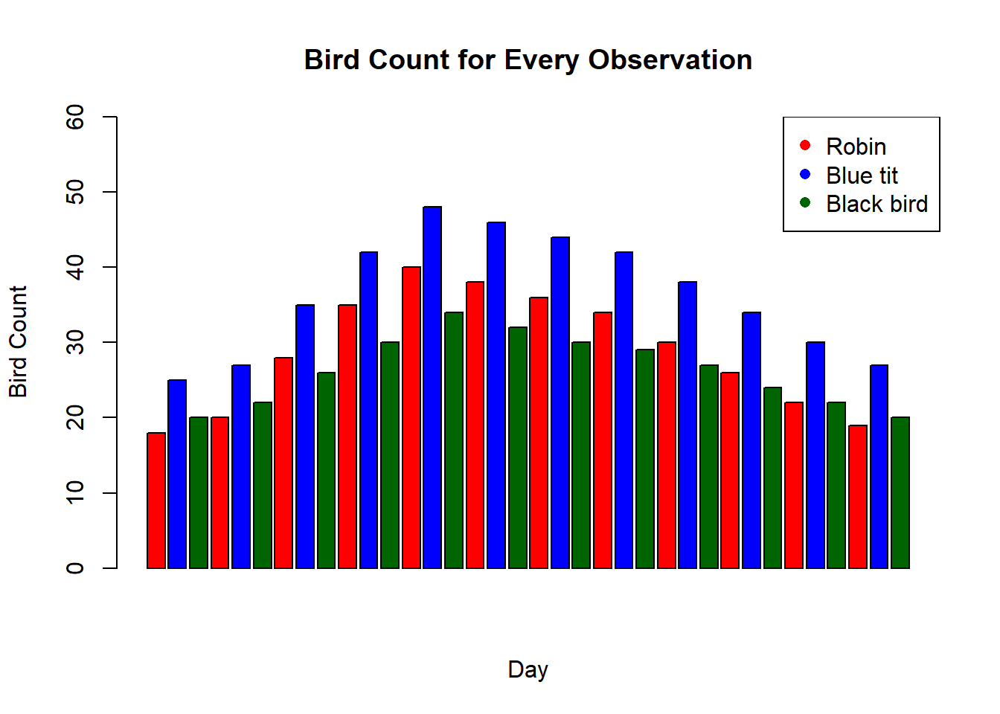
Now, the problem with this graph is that it is messy. There are so many bars it can be hard to interpret it, especially when you may have even larger sets of data. The easy way around this is calculating the mean, then plotting this instead:
#This will create the data frame containing averages for each observed species.
mean_counts <- aggregate(
Count ~ Species,
data = birds,
mean
)
#Then we plot
barplot(
mean_counts$Count,
col = c("red", "blue", "darkgreen"),
ylim = c(0, 45),
xlab = "Species",
ylab = "Mean Bird Count",
main = "Average Bird Count by Species"
)
text(0.7,28, "Robin",
font = 2)
text(1.9,38, "Blue tit",
font = 2)
text(3.1,31, "Blackbird",
font = 2)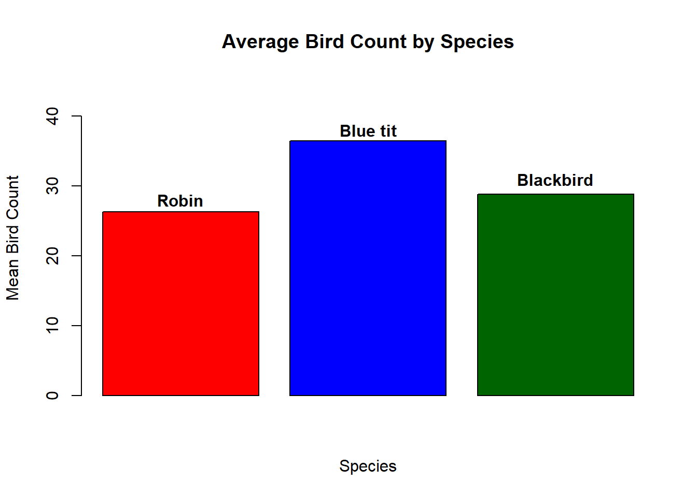
The obvious difference between this is that they show completely different data. The first plot is continuous and the second is categorical, so the first plot of counts per day would be better suited to a line graph, as seen in the prior example.
A scatter plot is used to represent the relationship between two continuous variables. Each plot will show one single observation.
They are useful for identifying trend, correlations, clusters or outliers
plot(birds$Wingspan_cm,
birds$Weight_g,
main = "Wing Length vs Body Weight",
xlab = "Wing Length (cm)",
ylab = "Body Weight (g)",
pch = 16,
col = "lightblue"
)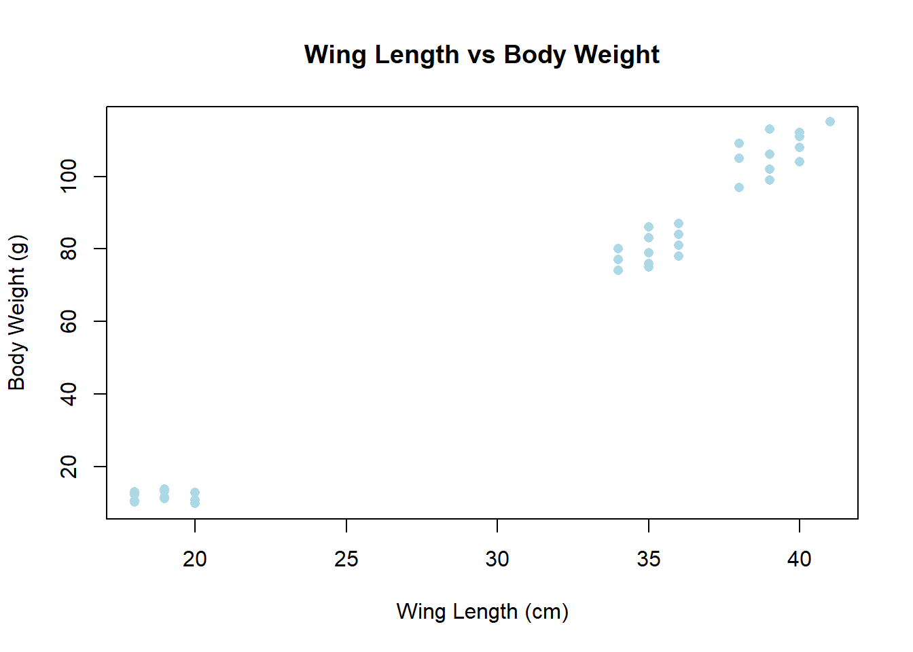
This graph clearly shows a positive correlation between wing length and body weight. This indicates that individuals with larger wingspans are typically heavier.
If we wanted to visualise this correlation better we can place a line of best fit:
plot(birds$Wingspan_cm,
birds$Weight_g,
main = "Wing Length vs Body Weight",
xlab = "Wing Length (cm)",
ylab = "Body Weight (g)",
pch = 16,
col = "lightblue"
)
abline(lm(Weight_g ~ Wingspan_cm, data = birds),
col = "red")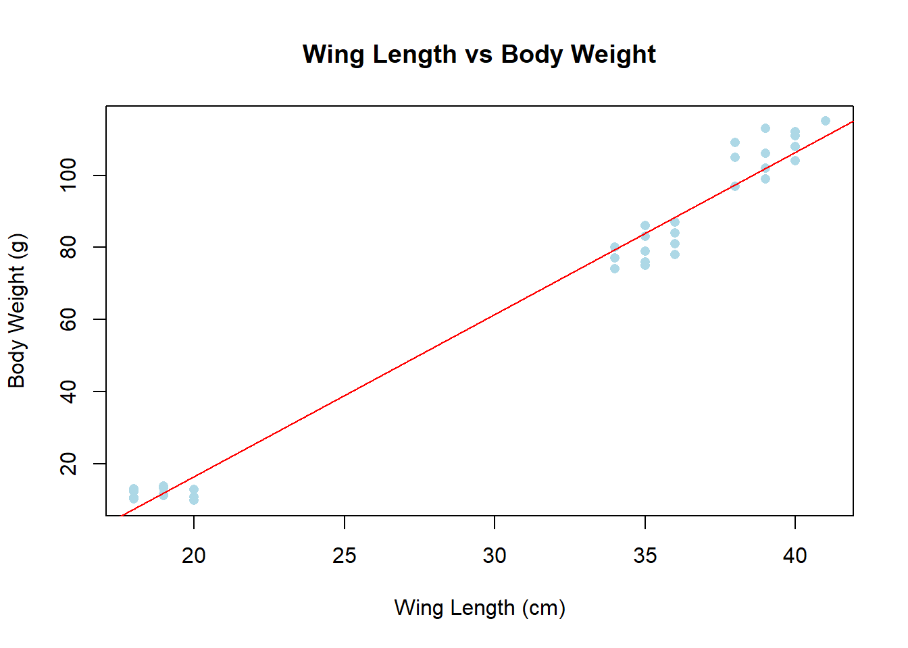
Furthermore, if we wanted to put a value to this correlation, we can use:
cor(birds$Wingspan_cm, birds$Weight_g)[1] 0.9913503A pie chart is an easy way to show how individual categories contribute to the whole data set.
One way we can use this dataset is by collecting the total amount per species, then plotting the pie chart using that data:
# Totally observations by species
totalbirds <- aggregate(
Count ~ Species,
data = birds,
sum
)
#The plot
pie(
totalbirds$Count,
labels = c("Robin","Blue Tit", "Blackbird"),
col = c("red", "blue", "darkgreen"),
main = "Average Bird Counts by Species"
)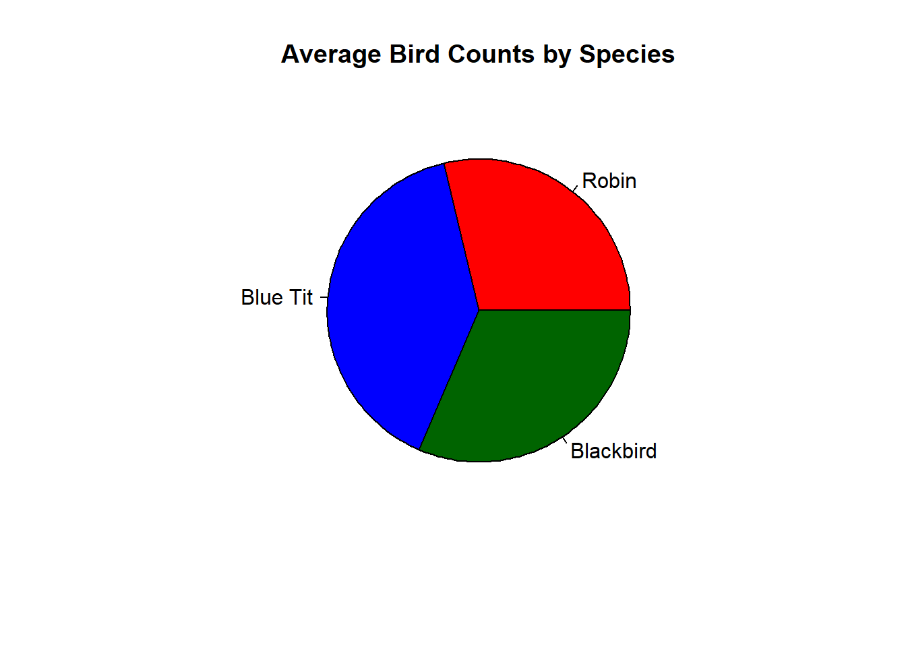
One issue with pie charts is that they’re purely visual; you cannot interpret numerical values from them. So instead we can assign the mean values as percentages to the labels; you do this by hand or, as always, you can get R to do it for you.
#simply calculating percentages
percentages <- totalbirds$Count / sum(totalbirds$Count) * 100
#The percentages may be to many decimal places, so rounding makes it easier to read
percentages <- round(percentages,1)
#we can then combine the percentages with our labels
birdlabels <- paste(totalbirds$Species, percentages, "%")
#Then we add them to the graph
pie(
totalbirds$Count,
labels = birdlabels,
col = c("red", "blue", "darkgreen"),
main = "Average Bird Counts by Species"
)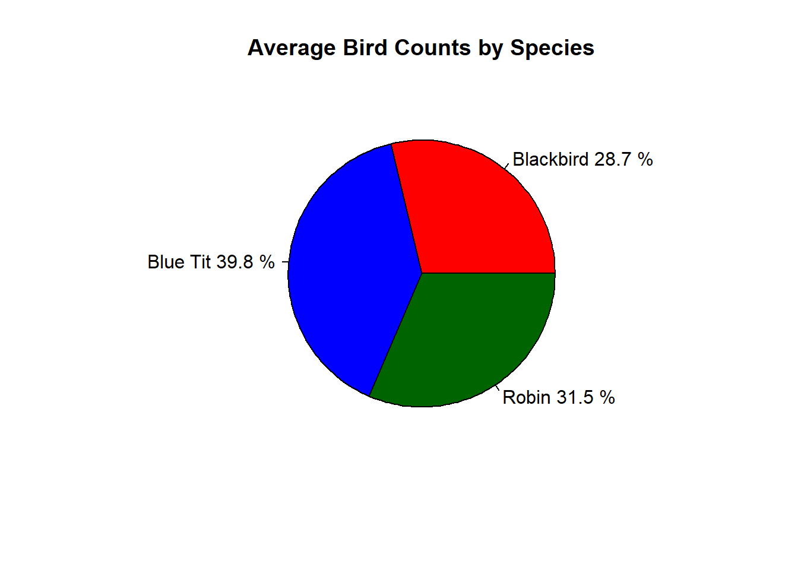
Lets say we wanted to create another pie chart which showed the habitat types of the observed birds. Firstly we need to assign the count of total observations per habitat to the character value (Garden and Woodland)
After this we can create the pie chart and add the percentages:
BirdHabitats <- aggregate(
Count ~ Habitat,
data = birds,
sum
)
percentagesB <- BirdHabitats$Count / sum(BirdHabitats$Count) * 100
percentagesB <- round(percentagesB, 1)
birdlabels <- paste(BirdHabitats$Habitat, percentagesB, "%")
pie(
BirdHabitats$Count,
labels = birdlabels,
col = c("forestgreen", "goldenrod"),
main = "Total Bird Counts by Habitat"
)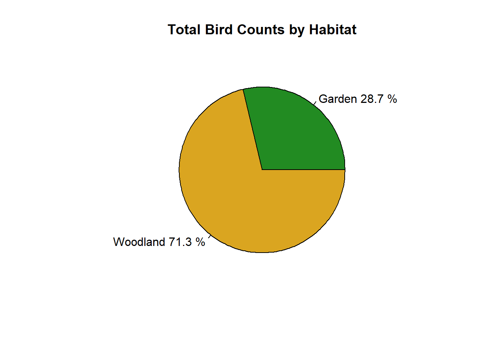
A box plot is used to compare the distribution of continuous variable between multiple groups.
Rather than displaying every observation, it will summarise the data using:
For this example we will compare the body weight of these three bird species: (Example is presented horizontally for visual purposes)
boxplot( Weight_g ~ Species,
data = birds,
col = c("red", "blue", "darkgreen"),
main = "Bird Weight by Species",
horizontal = TRUE,
xlab = "Weight (g)",
ylab = "Species"
)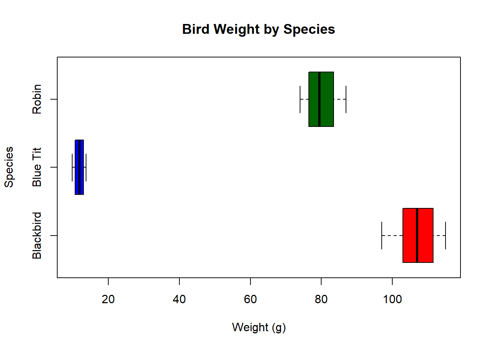
But for the purpose of explain what the parts of the box plots represent, we can look solely at one species:
boxplot( birds$Weight_g [birds$Species == "Robin"],
col = "red",
ylim = c(70, 90),
xlab = "Robin",
ylab = "Weight (g)",
main = "Robin weight"
)
text(0.8,87, "Max Value")
text(0.8,74, "Min Value")
text(0.73,80, "Median")
text(1.33,83, "Upper Quartile")
text(1.33,77, "Lower Quartile")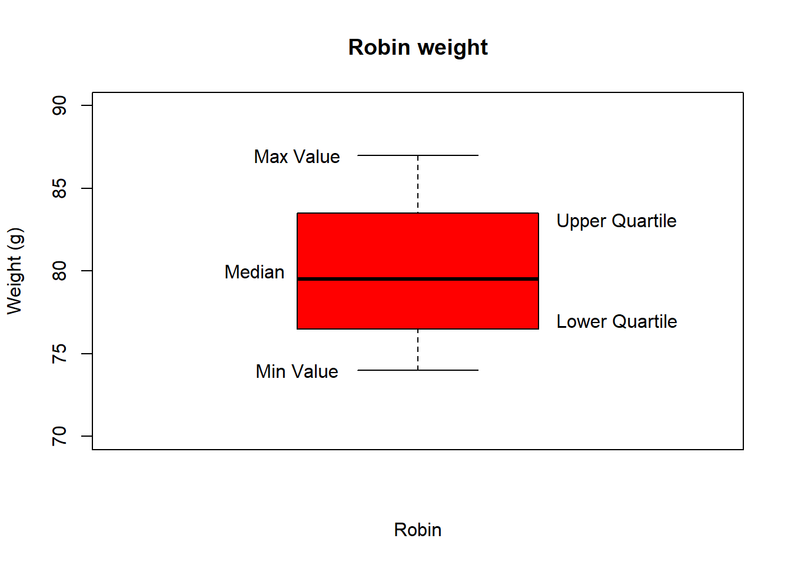
A histogram is used to display the distribution of a continuous numerical variable. It groups values into a series of intervals (bins) and shows the height of each bin by how many observations fall within it.
Unlike a bar chart, the bars of a histogram (bins) touch because the data is continuous.
For this example, we are going to look at just Robin weights. In order to make this process easier, we can assign a new variable to contain just the robin weights, then use the new variable when plotting,
RobinWeight <- birds$Weight_g [birds$Species == "Robin"]
hist(
RobinWeight,
main = "Distribution of Robin Weights",
breaks = 3,
ylim = c(0,5),
xlab = "Weight (g)",
ylab = "Frequency",
col = "#296748",
border = "black"
)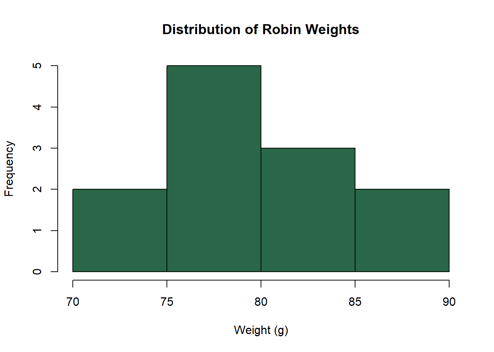
Depending on the amount of data you have, you may want to break the data into more bins by increasing the number of breaks between the data intervals, this can be done like this:
hist(
birds$Weight_g [birds$Species == "Robin"],
breaks = 7,
col = "#296748",
border = "black",
main = "Distribution of Robin Weights",
xlab = "Weight (g)",
ylim = c(0,4)
)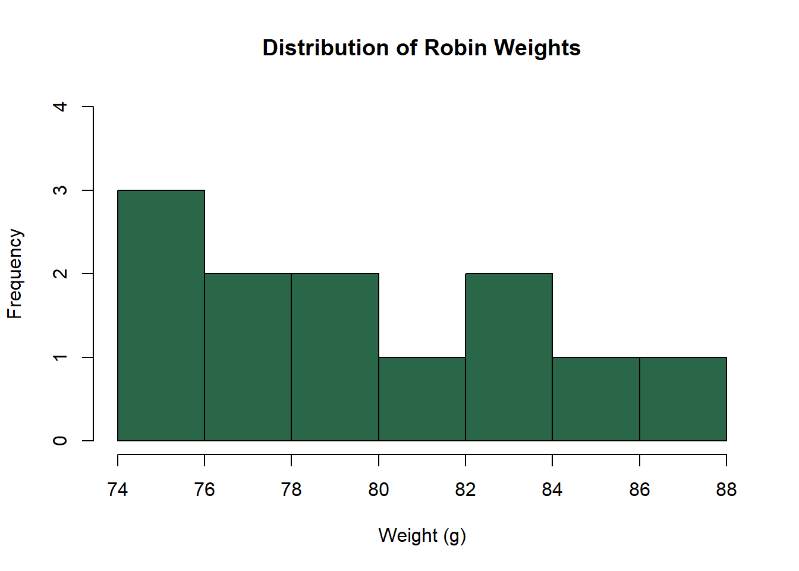
Once you have a plot, you may want to go a step further and add a line, similar to a line of best fit, which shows the overall shape of the distribution:
RobinWeight <- birds$Weight_g [birds$Species == "Robin"]
hist(
RobinWeight,
probability = TRUE,
col = "#296748",
border = "black",
main = "Distribution of Bird Weights",
xlab = "Weight (g)"
)
lines(
density(RobinWeight),
col = "red",
lwd = 2
)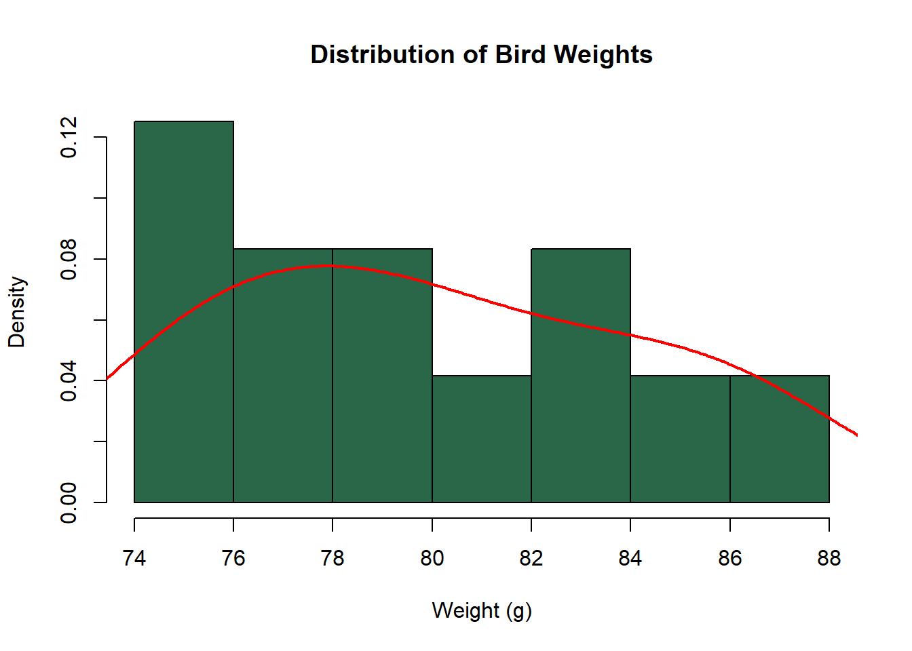
The following graph may not be useful until your HRP or postgraduate work; however, it’s a personal favourite, so I felt the need to add it.
A pairs Plot (or a scatterplot matrix) is a collection of scatter plots arranged in a grid. It compares every numerical variable against the others. It’s perfect for allowing you to identify relationships, outliers or clustering.
# Here is have re assigned the names of the columns from my data set so that
# when its produced on the plot it will look tidier. It cretes a new data frame
# from my existing data frame, taking only my columns [rows,columns].
BirdData <- birds[, c("Count", "Weight_g", "Wingspan_cm")]
# Colnames() then takes the newly made data frame columns and renames them.
colnames(BirdData) <- c(
"Bird Count",
"Weight (g)",
"Wingspan (cm)"
)
#This is the plot
pairs(
BirdData,
pch = 16,
col = c("red","blue","darkgreen")
)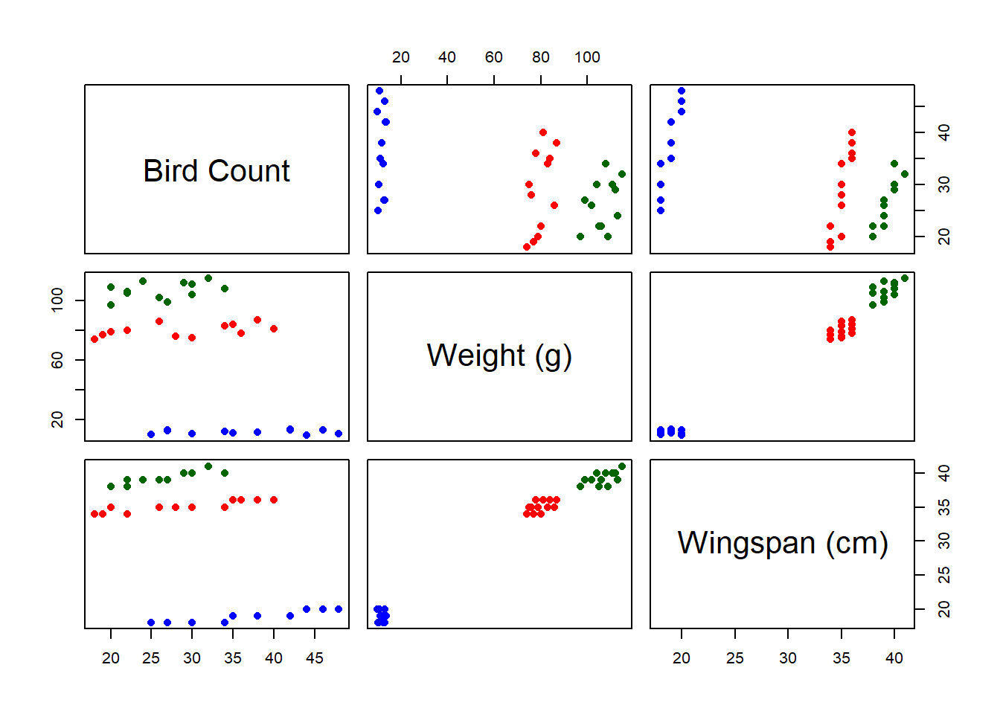
Important note
I must add that this colour vector works because of how the data is represented. The col vector assigns these colours to 3 values, then repeats; since the data has 3 observations per day, it works. If your data were arranged differently, you may want to assign a colour per species.